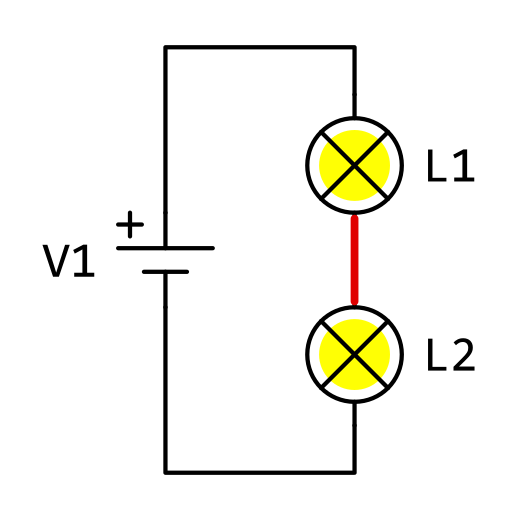
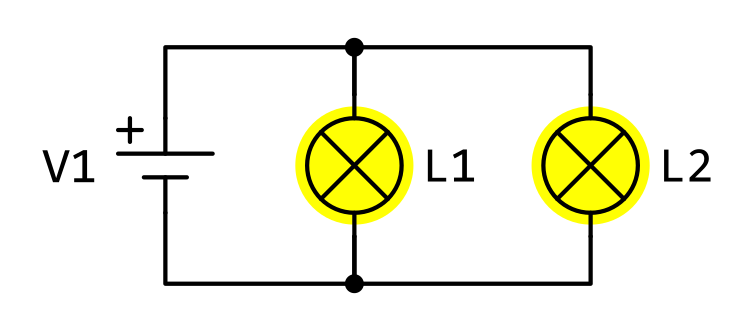
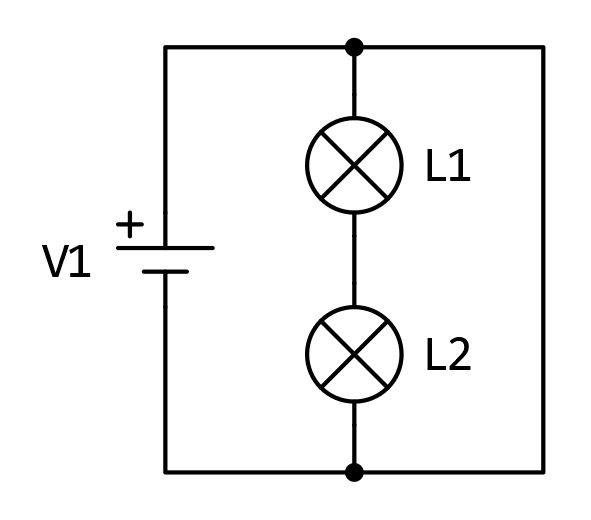
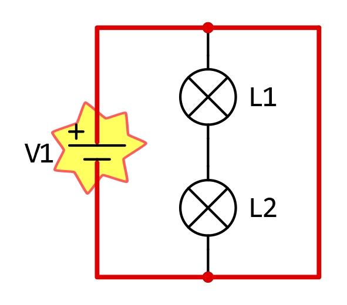

Series, parallel and short circuit¶
Electrical circuits can be connected in many possible ways. The simplest connections are the series connection and the parallel connection. Combining both achieves a mixed connection.
The serial connection is used when we want some components to affect the behavior of other components. This way, the light switch will be placed in series with the bulb so you can turn it on or off.
The parallel connection is used when we want the components to be independent. This way, we will place the two bulbs of a lamp in parallel so that when one of the bulbs burns out, the other continues to work without a problem.
Finally, if the electrical connections are made incorrectly, a short circuit or an open circuit can occur. Both will prevent the electrical circuit from working.
Next we will study in more detail these types of connections.
Series circuit¶
In a series circuit, the components are connected in a chain, one after the other.

Characteristics of a series circuit:
The electric current that passes through all the components is the same.
This means that if we remove or open one component, the other components will also have no power and will not work.
The battery voltage is divided between the components connected in series, which will therefore have a lower voltage than the battery.
This means that the bulbs light up less when in series.
Connection of a series circuit:
The positive voltage from the battery reaches the first bulb.

Below is a single connection between the first bulb and the second.
Finally there is a connection between the second bulb and the battery.

{kind=link}
Failure of a serial component:
{kind=link}
Parallel circuit¶
In a parallel circuit the components are connected to each other on both sides.
{kind=link}
Characteristics of a parallel circuit:
The electrical voltage that reaches all the components is the same.
This means that the bulbs have full battery voltage and are bright to their fullest.
The current from the battery is divided between the components connected in parallel. Therefore, a smaller current will flow through the bulbs than through the battery.
Connection of a circuit in parallel:
The two terminals of the bulbs are connected together.
The positive voltage of the battery reaches all the bulbs equally.

The negative voltage of the battery reaches all the bulbs equally.

Failure of a component in parallel:
If we remove one of the bulbs from a parallel connected circuit, or if it fails, the other bulbs will continue to work.

Light bulbs and other common components in a house are connected in parallel. In this way, the failure of one component does not prevent the others from functioning. If we remove a bulb from the house, the other bulbs will continue to work.
Short circuit¶
A short circuit is the union of the two terminals of the same component with a cable. When a component is shorted, it can't work because the current will be diverted down the wire. If a battery or generator is short-circuited, the current it generates will go through the wire and the generator or wire will burn out.
Short circuit in a component:
In the following schematic there is a short in the first bulb. The wire will carry the current so the top bulb L1 will stop working and the bottom bulb L2 will light up much brighter than if it were in series.
In the following image you can see the path of electricity. We see how the wire is the preferred path of least resistance for electric current. Therefore all the electrical current that previously passed through the bulb L1 now passes through the short circuit.

{kind=link}
Battery short circuit:
In this scheme there is a short circuit between the battery terminals. This means that all the current from the battery will go through the wire and one of the two will burn out.
The light bulbs do not light because there is no electrical current going to them.
Diagram of the battery short circuit and path of the current.
 
{kind=link}
{kind=link}
Note
Do not repeat this experiment under any circumstances, it is very dangerous.
Open circuit¶
An open circuit is a circuit that has no path for electrical current to flow. An open circuit can occur if a wire is missing to close the circuit, if there is an open switch, or if a series component is blown.
A circuit can be open if there is no way for the positive battery voltage to arrive or if there is no way for the negative battery voltage to arrive.


It is the first thing to check for when an electrical device does not work. Is it connected?
Exercises¶
Exercises to identify circuits in series, in parallel, with a short circuit in a light bulb or with a short circuit in the battery.
Quizzes¶
Test-type questionnaire to identify circuits in series, in parallel, with a short circuit in the battery or with a short circuit in the light bulb.